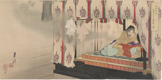
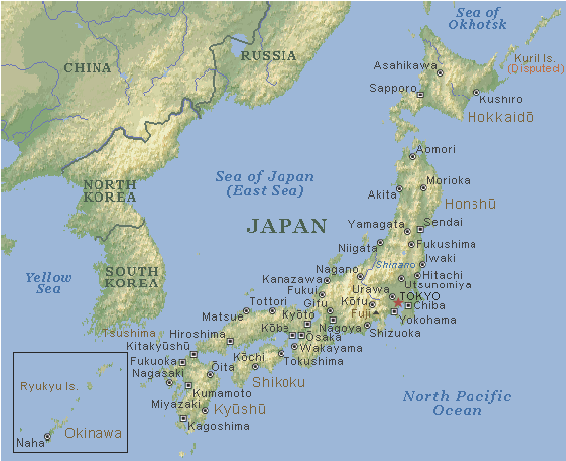

Sejarah

sejarah Jepang adalah kumpulan naskah sejarah Tiongkok Sejarah Dua Puluh Empat Dinasti asal abad ke-1 Masehi.
Namun bukti-bukti menunjukkan kepulauan Jepang sudah dihuni manusia sejak
zaman Paleolitik Atas[1] Setelah zaman es terakhir sekitar 12.000 SM, ekosistem Kepulauan Jepang yang kaya
memungkinkan manusia untuk hidup. Barang-barang tembikar tertua berasal dari zaman Jōmon.
Geografis

Jepang adalah negara kepulauan di Asia Timur. Kepulauan Jepang terdiri dari pulau-pulau stratovolcano, empat pulau utama dari utara ke selatan adalah Hokkaido, Honshu, Shikoku, dan Kyushu.
Jepang berada 36°sebelah utara khatulistiwa dan 138°sebelah timur meridian utama.
Jepang berada di utara timur laut Cina dan Taiwan (dipisahkan oleh Laut Cina Timur), sebelah timur Korea (dipisahkan oleh Laut Jepang), dan sebelah selatan Rusia Timur Jauh.
Selain 4 pulau utama, terdapat 3.000 pulau-pulau berukuran lebih kecil, termasuk Okinawa serta pulau-pulau kecil yang berpenghuni atau tidak berpenghuni.
Pada tahun 2006, total luas wilayah Jepang adalah 377.923,1 km², di antaranya 374.834 km² adalah daratan dan 3.091 km² perairan.
Sekitar 73% wilayah Jepang adalah daerah pegunungan. Total luas wilayah Jepang kira-kira 85% luas Pulau Sumatra, tetapi lebih besar dari luas wilayah Jerman, Malaysia, Selandia Baru, dan Britania Raya.
Wisata
Jepang, dengan keindahan alam dan budayanya yang kaya, menawarkan berbagai destinasi wisata yang menakjubkan sepanjang tahun.
Setiap musim menghadirkan pesona unik, dari mekarnya bunga sakura di musim semi hingga salju yang memutih di musim dingin.
Tokyo Disneyland & DisneySea

Tokyo Disneyland dan DisneySea, merupakan taman hiburan terkenal di Jepang yang menawarkan berbagai atraksi dan wahana bertema Disney.
Disneyland berisi wahana-wahana yang variatif dan lebih ditujukan ke anak-anak, sedangkan DisneySea terdiri dari wahana yang lebih condong berpetualang dan penuh adrenalin.
Lokasi: Tokyo Disney Resort, Chiba
Jam Operasional: 8:00 – 22:00
Harga Tiket: ¥7,400 – ¥9,400
Gunung Fuji

Gunung Fuji, gunung tertinggi di Jepang dan salah satu ikon nasional yang paling dikenal.
Pendakian gunung ini populer di kalangan pendaki selama musim pendakian resmi dari Juli hingga September.
Lokasi: Shizuoka/Yamanashi
Jam Operasional: Sepanjang tahun (tergantung jalur pendakian)
Harga Tiket: Gratis (biaya tambahan untuk fasilitas tertentu)
Shibuya Crossing

Shibuya Crossing, salah satu persimpangan pejalan kaki tersibuk di dunia.
Terletak di depan Stasiun Shibuya, persimpangan ini terkenal dengan keramaian dan lampu neon yang memukau, menjadi ikon kehidupan perkotaan Tokyo yang dinamis.
Lokasi: Tokyo
Jam Operasional: 24 jam
Harga Tiket: Gratis
Osaka Castle, Osaka

Osaka Castle, Sebuah kastil yang penuh dengan sejarah. Jika kamu datang saat musim gugur, kamu akan melihat kastil ini dikelilingi taman dengan daun musim gugur yang menawan.
Lokasi: Chuo Ward, Osaka
Jam Operasional: 09:00 – 17:00
Tiket Masuk: Gratis dengan Osaka Amazing Pass
Gunung Gozaisho, Shiga

Gunung Gozaisho, Gunung yang memiliki ketinggian 1.212 meter ini akan sangat memanjakan mata mu saat dikunjungi pada musim gugur,
karena kamu akan melihat keindahan pepohonan musim gugur dari atas menggunakan ropeway.
Lokasi: Higashiomi, Shiga
Jam Operasional: 09:00 – 17:00
Tiket Masuk: Gratis (biaya ropeway tambahan)
Universal Studios Japan

Universal Studios Japan, taman hiburan bertema film yang menawarkan berbagai atraksi menarik berdasarkan film dan karakter populer seperti Harry Potter,
Minions, dan Jurassic Park. Tempat ini sangat cocok untuk keluarga dan penggemar film.
Lokasi: Osaka
Jam Operasional: 8:30 – 21:00
Harga Tiket: ¥7,800 – ¥8,900